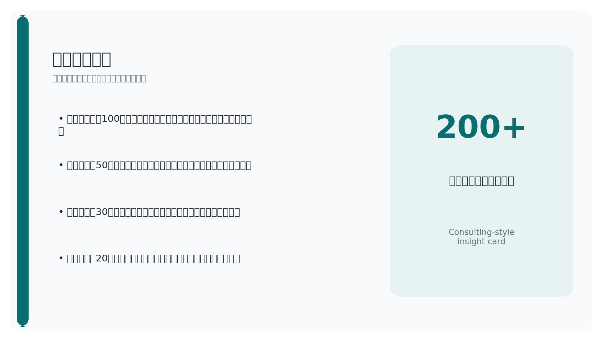
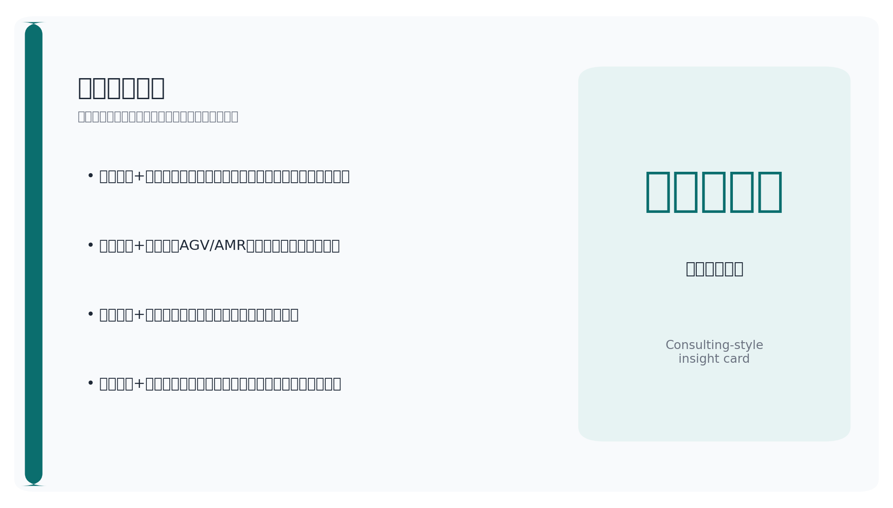
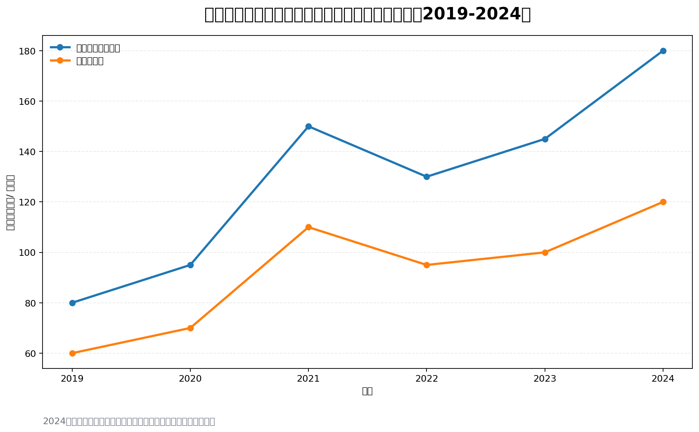
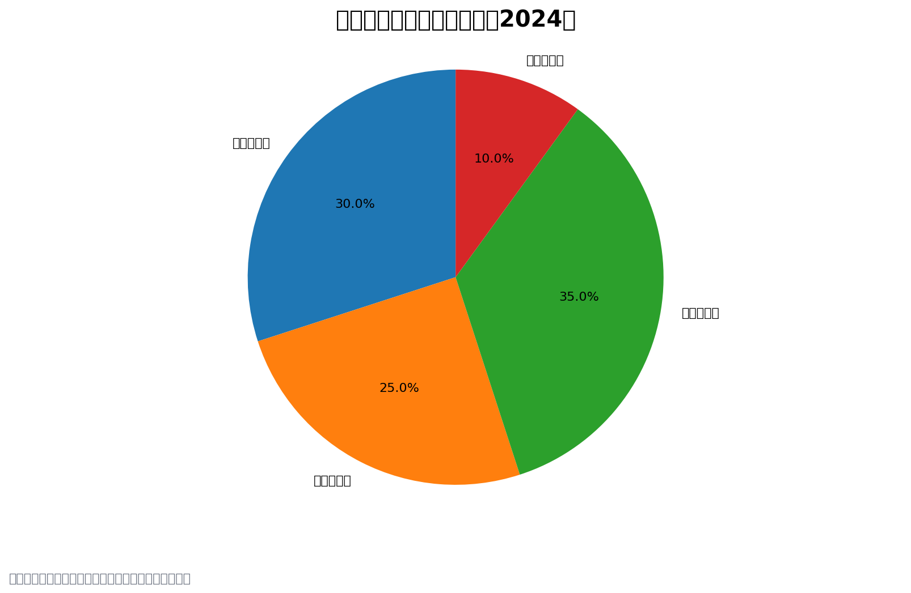
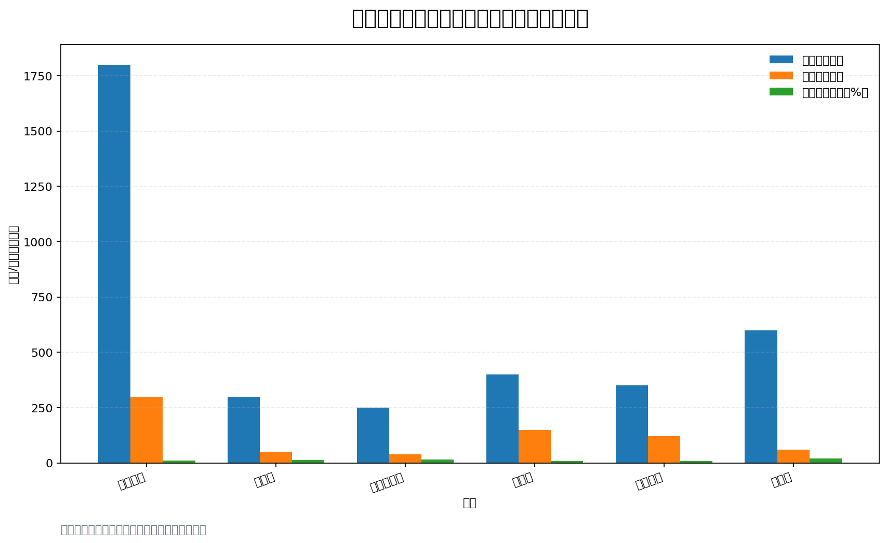
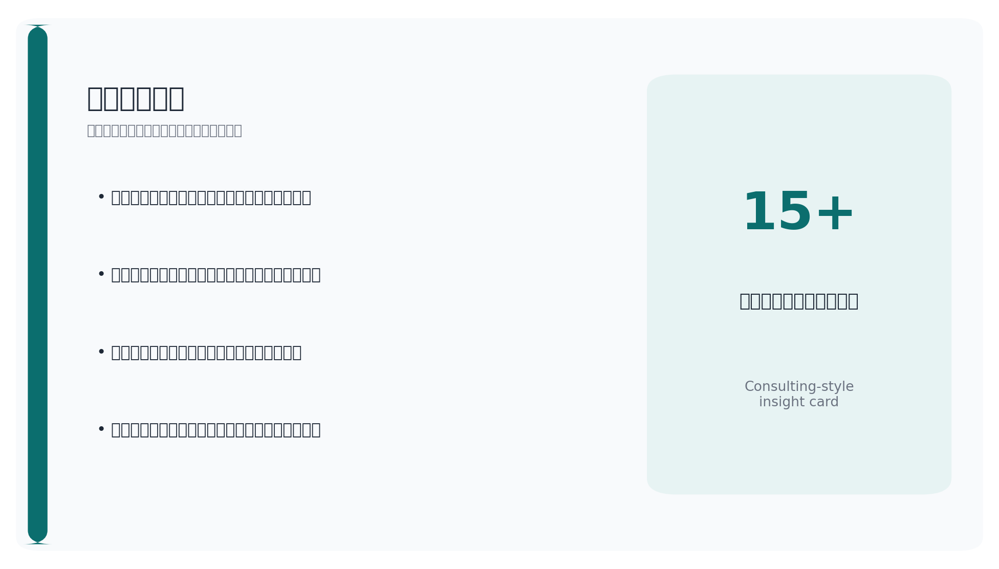

资本流向、政策驱动与细分赛道机会分析


中国连续多年成为全球最大工业机器人消费市场，同时服务与人形机器人正开启第二增长曲线。
根据中国电子学会等机构数据，2023年中国机器人市场规模约980亿元，预计2024年突破1100亿元，年复合增长率约15%。工业机器人仍占据约60%份额，但服务机器人（含物流、医疗、教育）增速超过20%，人形机器人从实验室走向产业化初期。
增长核心驱动力包括：制造业智能化升级需求（尤其是新能源汽车、电子制造）、人口老龄化催生的服务替代需求、以及政策对‘机器人+’应用场景的持续开放。

产业链上游（核心零部件如减速器、伺服电机、控制器）国产化率逐步提升，但高端产品仍依赖进口；中游本体制造竞争激烈，下游系统集成商分散。投资机会正从整机向核心零部件和软件平台迁移。
值得注意的是，不同机构对‘机器人’的统计口径存在差异（如是否包含AGV/AMR、无人机、智能穿戴设备），导致市场规模数据可能相差20%-30%，投资者需注意数据来源的一致性。
2024年机器人领域融资回暖，早期项目占比提升，人形机器人赛道吸金能力突出。
据公开融资事件统计，2024年中国机器人行业融资事件约120起，披露总金额约180亿元，较2023年增长约25%。其中，人形机器人融资额占比超过35%，成为最大吸金赛道；工业机器人融资额占比约30%，但事件数量最多；服务机器人（含商用清洁、配送、医疗）占比25%；特种机器人（安防、巡检、水下）占比10%。
从轮次分布看，A轮及以前融资事件占比超过60%，表明资本更倾向于早期布局。头部机构如红杉中国、高瓴创投、IDG资本、深创投等频繁出手，同时产业资本（如美的、比亚迪、腾讯）也通过CVC形式参与。

地域上，北京、深圳、上海、杭州四城集中了超过70%的融资事件，与当地产业基础、高校资源和政策支持高度相关。
需要指出的是，大量早期融资未公开披露金额，实际投资热度可能高于统计数据。此外，部分企业通过政府引导基金获得低成本资金，这部分未计入常规融资统计。
从‘机器人产业规划’到‘新质生产力’，政策工具箱持续丰富，地方产业基金竞相设立。
国家层面，《‘十四五’机器人产业发展规划》明确2025年机器人产业营收年均增长超过20%的目标。2024年，工信部等十七部门联合印发《‘机器人+’应用行动实施方案》，推动机器人进入制造业、农业、医疗、教育等十大领域。
地方层面，北京、上海、深圳、广东、江苏、浙江等地纷纷设立机器人产业专项基金，规模从数十亿到百亿不等。例如，北京经济技术开发区设立100亿元机器人产业基金，重点支持人形机器人；上海浦东新区推出50亿元智能机器人产业引导基金。
政策从早期的直接补贴转向‘基金+税收优惠+场景开放’组合拳。例如，对采购国产工业机器人的企业给予15%-20%的税收抵扣，对人形机器人研发企业提供3-5年所得税减免。
风险提示：补贴退坡或出口管制可能影响部分企业估值与融资节奏。例如，2024年部分地方对工业机器人的购置补贴已从30%下调至15%，可能抑制短期需求。
各细分赛道处于不同发展阶段，投资逻辑差异显著。
工业机器人：国产替代进入深水区，埃斯顿、汇川技术等本土企业在中低端市场已占据主导，但高端六轴机器人、协作机器人仍由发那科、ABB等外资主导。投资机会在于核心零部件（RV减速器、伺服系统）的国产突破，以及特定行业（如锂电、光伏）的定制化解决方案。
服务机器人：商用清洁、配送、医疗机器人已进入规模化落地阶段，但盈利模式仍在验证。投资关注点在于场景渗透率、复购率和客户生命周期价值。
人形机器人：处于技术验证到产品化的过渡期，特斯拉Optimus、优必选、小米CyberOne等推动产业链成熟。投资机会集中在传感器、执行器、AI算法和轻量化材料。
特种机器人：受国防、应急、能源等政策驱动，需求稳定但市场容量有限。投资需关注资质壁垒和订单可持续性。
本土企业在资本助力下加速追赶，外资仍占据高端市场利润高地。
A股机器人相关上市公司超过50家，总市值约8000亿元（2024年10月）。其中，汇川技术（市值约1800亿元）、埃斯顿（市值约300亿元）、新松机器人（市值约250亿元）为工业机器人龙头；服务机器人领域，科沃斯（市值约400亿元）、石头科技（市值约350亿元）表现突出；人形机器人领域，优必选（港股上市，市值约600亿港元）为标杆。
外资企业如发那科、ABB、库卡（美的旗下）在中国仍保持高端市场份额，但本土企业通过性价比和本地化服务持续侵蚀其份额。从研发投入占比看，本土头部企业研发费用率普遍在8%-15%，高于外资的5%-8%。

投资对比上，外资企业在中国更多通过合资或独资建厂方式扩张，而本土企业依赖一级市场融资和地方政府支持。二级市场方面，机器人板块估值分化明显，人形机器人概念股PE普遍在50-100倍，工业机器人则在20-40倍。
风险提示：地缘政治可能导致外资技术封锁或供应链限制，影响本土企业核心零部件进口。
投资机器人赛道需正视技术、政策和市场三重风险，同时关注IPO与并购退出机会。
技术瓶颈：核心零部件（高端减速器、伺服电机、AI芯片）仍受制于人，人形机器人的运动控制、环境感知和成本控制尚未达到商业化临界点。
地缘政治风险：美国对华技术出口管制可能影响AI芯片、高端传感器等关键元器件的供应，进而拖累产品研发和量产进度。

退出路径：2024年机器人企业IPO节奏放缓，科创板对未盈利企业审核趋严，部分企业转向港股或北交所。并购退出逐渐活跃，产业资本（如美的、比亚迪）通过收购技术团队或初创公司补齐短板。
展望：未来3-5年，人形机器人有望在特定场景（如工业搬运、家庭服务）实现小批量应用，核心零部件国产化率将从目前的30%提升至50%以上，行业将迎来整合期，头部企业通过规模效应和品牌优势巩固地位。